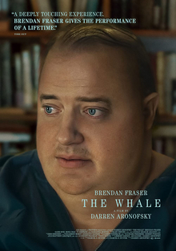
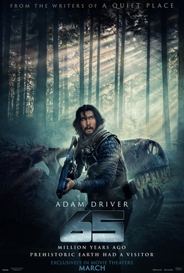
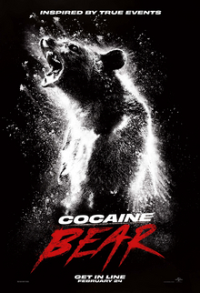
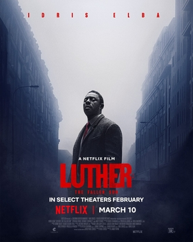

| Movie Image |
Movie Title |
Movie Description |
|
Shazam! Fury of the Gods(2023) |
Shazam! Fury of the Gods is a 2023 American superhero film based on the DC Comics character Shazam. Produced by New Line Cinema, DC Studios, and the Safran Company, and distributed by Warner Bros. Pictures, it is the sequel to Shazam! (2019) and the 12th installment in the DC Extended Universe (DCEU). The film was directed by David F. Sandberg, produced by Peter Safran, and written by Henry Gayden and Chris Morgan, and stars Zachary Levi, Asher Angel, Jack Dylan Grazer, Rachel Zegler, Grace Caroline Currey, Adam Brody, Ross Butler, Meagan Good, Lucy Liu, Djimon Hounsou, and Helen Mirren. In the film, Billy Batson / Shazam and his foster siblings fight the Daughters of Atlas.
A sequel to Shazam! began development shortly after that film's release in April 2019, with Gayden returning as writer, and Morgan joining soon after to revise Gayden's screenplay. Sandberg and Levi (Shazam) were also set to return by that December. The title and rest of the returning cast were confirmed in August 2020, with Zegler, Mirren and Liu cast as the daughters of Atlas in early 2021. Filming began that May in Atlanta, Georgia, and concluded in August.
Shazam! Fury of the Gods premiered at the Fox Village Theater in the Westwood neighborhood of Los Angeles on March 14, 2023, and was theatrically released in the United States on March 17. The film received mixed reviews from critics and has grossed $71 million worldwide.
Plot |
 |
Everything Everywhere All at Once (2022) |
Everything Everywhere All at Once is a 2022 American absurdist comedy-drama film written and directed by Daniel Kwan and Daniel Scheinert (collectively known as "Daniels"), who produced it with Anthony and Joe Russo and Jonathan Wang. It follows Evelyn Wang, a Chinese-American immigrant who, while being audited by the IRS, must connect with parallel universe versions of herself to prevent a powerful being from destroying the multiverse. Michelle Yeoh stars as Evelyn, with Stephanie Hsu, Ke Huy Quan, Jenny Slate, Harry Shum Jr., James Hong, and Jamie Lee Curtis in supporting roles.
Kwan and Scheinert began work on the project in 2010, and its production was announced in 2018. Principal photography ran from January to March 2020. The soundtrack features compositions by Son Lux, including collaborations with Mitski, David Byrne, André 3000, John Hampson, and Randy Newman.
Everything Everywhere All at Once premiered at South by Southwest on March 11, 2022, and began a limited theatrical release in the United States on March 25, 2022, before a wide release by Manhattan-based A24 on April 8. The film was universally acclaimed for its originality, screenplay, direction, acting (particularly of Yeoh, Hsu, Quan, and Curtis), visual effects, costume design, action sequences, musical score, and editing. Its portrayal of philosophical concepts such as existentialism, nihilism, and absurdism, as well as its approach to themes such as neurodivergence, depression, generational trauma, and Asian American identity, have been widely analyzed. The New York Times called the film a "swirl of genre anarchy" with elements of surreal comedy, science fiction, fantasy, martial arts films, and animation.[6] It grossed $132 million worldwide, becoming A24's first film to cross the $100 million mark and surpassing Hereditary (2018) as its highest-grossing film.
Everything Everywhere All at Once is the most awarded film of all time. It received a leading eleven nominations at the 95th Academy Awards, and won a leading seven awards: Best Picture, Best Director, Best Actress (Yeoh), Best Supporting Actor (Quan), Best Supporting Actress (Curtis), Best Original Screenplay, and Best Film Editing.[7][8][9][10] It also won two Golden Globe Awards, five Critics' Choice Awards (including Best Picture), one BAFTA Award, a record four SAG Awards (including Best Ensemble), a record seven Independent Spirit Awards (including Best Feature),[11][12] and swept the four major guild awards (DGA, PGA, SAG, and WGA).[13] |
 |
Scream VI (2023) |
Scream VI is a 2023 American slasher film directed by Matt Bettinelli-Olpin and Tyler Gillett, and written by James Vanderbilt and Guy Busick. It is the sequel to Scream (2022) and the sixth installment in the Scream film series. The film stars Melissa Barrera, Jasmin Savoy Brown, Mason Gooding, Jenna Ortega, Hayden Panettiere, and Courteney Cox, all reprising their roles from previous installments, alongside Jack Champion, Henry Czerny, Liana Liberato, Dermot Mulroney, Devyn Nekoda, Tony Revolori, Josh Segarra, and Samara Weaving. Scream VI follows a new Ghostface killer who targets the survivors of the "Woodsboro legacy attacks" in New York City.
A sixth Scream film was announced just weeks after the successful debut of Scream (2022), with much of the cast signing on to reprise their roles. Filming took place in Montreal, Canada, from June through August 2022. Like its predecessors, the film combines the violence of the slasher genre with elements of black comedy and a "whodunit" mystery, and satirizes the trends of film franchises and subversion of audience expectations. Neve Campbell did not reprise her role as Sidney Prescott because she felt the offer presented to her was inadequate, making this the first Scream film not to feature her.
Scream VI premiered at the AMC Lincoln Square Theater in Manhattan on March 6, 2023, and was theatrically released in the United States on March 10 by Paramount Pictures. The film received generally positive reviews from critics, who praised the kills and performances. It has grossed over $121 million worldwide. |
|  |
The Whale (2022) |
The Whale is a 2022 American psychological drama film directed by Darren Aronofsky and written by Samuel D. Hunter, based on his 2012 play of the same name.[5] The film stars Brendan Fraser, Sadie Sink, Hong Chau, Ty Simpkins, and Samantha Morton. The plot follows a reclusive, morbidly obese English teacher who tries to restore his relationship with his teenage daughter.[6]
The Whale premiered at the 79th Venice International Film Festival on September 4, 2022, and had a limited theatrical release in the United States on December 9, before a wide release on December 21, by A24. The film polarized critics,[7] though the cast's performances, particularly those of Fraser and Chau, received praise. It has grossed $50 million against a budget of $3 million. For his performance, Fraser won Best Actor at the Academy Awards, Critics' Choice Awards, and Screen Actors Guild Awards, and was nominated at the Golden Globe Awards and British Academy Film Awards. The film also won the Academy Award for Best Makeup and Hairstyling, and received a Best Supporting Actress nomination for Chau, as well as a nomination for the Producers Guild of America Award for Best Theatrical Motion Picture. |
|  |
65(2023) |
65 is a 2023 American science fiction action thriller film written and directed by Scott Beck and Bryan Woods and starring Adam Driver and Ariana Greenblatt. It is a co-production between Columbia Pictures, Bron Creative, Raimi Productions, TSG Entertainment, and Beck/Woods. In the film, a pilot crashes on an unknown planet, which turns out to be Earth during the Cretaceous period, and fights to survive the dangerous prehistoric environment.
65 was released in the United States on March 10, 2023, by Sony Pictures Releasing. It received mixed reviews from critics and has grossed $41 million worldwide. |
|  |
Cocaine Bear(2023) |
Cocaine Bear (released as Crazy Bear in some countries) is a 2023 American comedy horror thriller film directed by Elizabeth Banks and written by Jimmy Warden.[6] It is loosely inspired by the true story of the "Cocaine Bear", an American black bear that ingested nearly 75 lb (34 kg) of lost cocaine. It stars Keri Russell, O'Shea Jackson Jr., Christian Convery, Alden Ehrenreich, Brooklynn Prince, Isiah Whitlock Jr., Margo Martindale, and Ray Liotta. The film is dedicated to Liotta, who died in May 2022.[7]
Cocaine Bear was theatrically released in the United States on February 24, 2023, by Universal Pictures. The film received mixed reviews from critics and has grossed $78 million worldwide against a $30–35 million budget. |
|
Boston Strangler(2023) |
Boston Strangler is a 2023 American historical crime drama film written and directed by Matt Ruskin. It is based on the true story of the Boston Strangler, who in the 1960s killed 13 women in Boston. The film stars Keira Knightley as Loretta McLaughlin, the reporter who broke the story for the Boston Record American. Carrie Coon, Alessandro Nivola, Chris Cooper, David Dastmalchian, and Morgan Spector co-star. Filming took place in Greater Boston from December 2021 to March 2022. The film was released on March 17, 2023, by Hulu. |
 |
Creed III (2023) |
Creed III is a 2023 American sports drama film directed by and starring Michael B. Jordan (in his directorial debut) from a screenplay by Keenan Coogler and Zach Baylin. It is the sequel to Creed II (2018), the third in the Creed film series, and the ninth overall in the Rocky film series. It also stars Tessa Thompson, Jonathan Majors, Wood Harris, Florian Munteanu and Phylicia Rashad. In the film, the accomplished and recently retired boxer Adonis Creed (Jordan) comes face-to-face with his childhood friend and former boxing prodigy Damian Anderson (Majors).
A third Creed film was officially announced in September 2019, alongside Jordan's return; he was also confirmed to be making his directorial debut in October 2020. Majors and the remainder of the cast joined between November 2021 and September 2022; Creed III is the first film in the series not to feature Sylvester Stallone reprising his role as Rocky Balboa, though he is credited as a producer alongside Ryan Coogler, who contributed to the film's story. Principal photography began in January 2022 and lasted until that April, with filming locations including Los Angeles, Tampa, and Georgia.
Creed III first premiered in Mexico City on February 9, 2023. It was then theatrically released in the United States on March 3 as the first film distributed by Metro-Goldwyn-Mayer after its acquisition by Amazon, and is the first MGM distributed film to not have the United Artists Releasing logo since Fighting with My Family (2019). The film received positive reviews from critics and has grossed $228 million worldwide. |
|  |
Luther - The Fallen Sun (2023) |
Luther: The Fallen Sun, stylised onscreen simply as Luther, is a 2023 crime thriller film directed by Jamie Payne and written by Neil Cross. It serves as a film continuation of the 2010–19 British television series of the same name. The film stars Idris Elba (who also serves as a producer on the film), reprising his role as John Luther, with Cynthia Erivo and Andy Serkis.
Luther: The Fallen Sun was released in select cinemas on 24 February 2023, before its streaming release on 10 March 2023, by Netflix. |
 |
Tenet(2020) |
Tenet is a 2020 science fiction action thriller film directed and written by Christopher Nolan, who also produced with his wife Emma Thomas. A co-production between the United Kingdom and the United States, it stars John David Washington, Robert Pattinson, Elizabeth Debicki, Dimple Kapadia, Michael Caine, and Kenneth Branagh. The film follows a former CIA agent who learns how to manipulate the flow of time to prevent an attack from the future that threatens to annihilate the present world. Nolan continued his relationship with Warner Bros. and his production company Syncopy for the film's production and distribution.
Nolan took over five years to write the screenplay after deliberating about Tenet's central ideas for over a decade. Pre-production began in late 2018, casting took place in March 2019, and principal photography lasted six months, from May to November, in Denmark, Estonia, India, Italy, Norway, the United Kingdom, and the United States. Cinematographer Hoyte van Hoytema shot on 65 mm film and IMAX. After being delayed three times because of the COVID-19 pandemic, Tenet was released in the United Kingdom on August 26, 2020, and in the United States on September 3, 2020, in IMAX, 35 mm, and 70 mm.
It was the first Hollywood tent-pole to open in theaters during the pandemic and grossed $365 million worldwide on a $200 million budget, making it the fifth-highest-grossing film of 2020 but also a box office failure. The film received generally positive reviews from critics, who praised its ambition, direction, musical score, VFX, action sequences, and cast performances (particularly Washington, Debicki, and Pattinson), but received criticism directed towards its sound mixing. It was nominated for two awards at the 93rd Academy Awards, winning Best Visual Effects, and received numerous other accolades. |